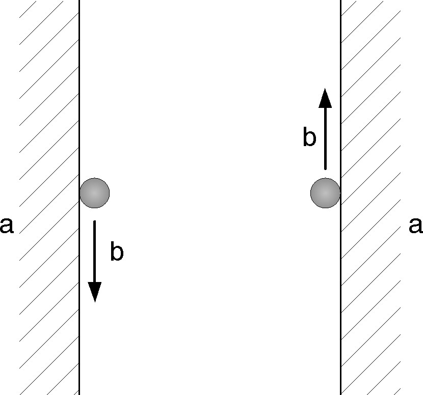
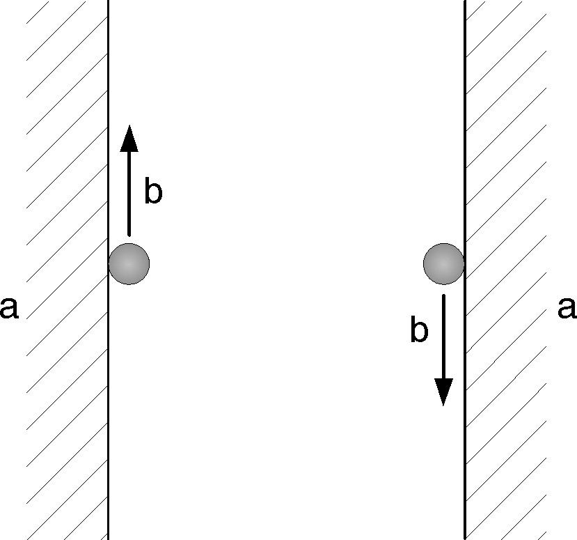

Schnittspaltkorrektur
Die Schnittspaltkorrektur ermöglicht die Bearbeitung eines teilebezogenen Programms auf einer Äquidistanten zur programmierten Bahn. Eine Bahn mit konstantem Abstand zur programmierten Kontur wird angefahren.
TC_LASERCORR_ON
Aktivieren der Schnittspaltkorrektur.
Der Zyklusaufruf TC_LASERCORR_ON wird mit einem Parameter im NC-Programm aufgerufen:
TC_LASERCORR_ON (Korrekturrichtung)
-
Wird nach dem Aufruf von TC_LASER_ON programmiert.
-
Der folgende NC-Block muss ein Linearblock (G01) sein. Die Korrektur muss auf einer Linearbewegung zurückgefahren werden.
-
Der Werkzeugweg des Lasers wird aus dem Wert "Schnittspalt" der Technologietabelle berechnet. Der Schnittspalt wird aus den Schneidparametern von TC_LASER_ON abgeleitet.
-
Wird durch TC_LASER_OFF gelöscht (Strahl AUS, automatische Abschaltung der Schnittspaltkorrektur und Anfahren der zuletzt programmierten Position des Laserschneidkopfes).
Die Schnittspaltkorrektur muss nicht abgeschaltet werden, wenn bei bereits ausgefahrener Korrektur ein Konturwechsel mit geändertem Schnittspalt durchgeführt werden soll. Es muss lediglich ein TC_LASER_ON-Aufruf mit entsprechendem Schneidtyp programmiert werden. Die neue Korrektur wird im folgenden Bewegungsblock linear über den gesamten Block korrigiert.
Die Schnittspaltkorrektur wird je nach eingestelltem Parameter links oder rechts von der programmierten Kontur durchgeführt.
Aktivierung der Schnittspaltkorrektur links von der Kontur:

Aktivierung der Schnittspaltkorrektur rechts von der Kontur:

| Block | NC-Programm | Beschreibung |
|---|---|---|
N100 |
G01 X500 Y100 |
Positionierbewegung. |
N110 |
TC_LASER_ON(1,"1755",10,100) |
Laser EIN. |
N120 |
TC_LASERCORR_ON(T_LEFT) |
Aktivierung der Schnittspaltkorrektur links von der Kontur. |
N130 |
G01 X400 Y100 |
Korrekturausfahrt. |
N140 |
G03 X500 Y200 I100 |
Konturbearbeitung. |
N150 |
TC_LASER_ON(1,"1755",10,110) |
Konturwechsel. |
N160 |
G02 X450 Y150 I-50 |
Korrekturänderung im ersten Verfahrblock. |
N170 |
G03 X400 Y100 J-50 |
|
N180 |
TC_LASER_OFF(1) |
Laser AUS, Abschalten der Schnittspaltkorrektur und Rückfahrt der Korrektur. |
N190 |
G03 |
Aktive G-Funktion. |